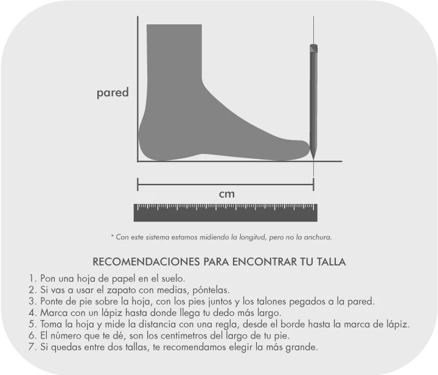

×

Recomendaciones para encontrar tu talla
Hombres
Mujeres
Niños
Pon una hoja de papel en el suelo.
Si vas a usar el zapato con medias, póntelas.
Ponte de pie sobre la hoja, con los talones pegados a la pared.
Marca con un lápiz hasta dónde llega el dedo más largo.
Toma la hoja y mide la distancia con una regla, desde el borde hasta la marca de lápiz.
El número que te da, son los centímetros del largo de tu pie.
Si quedas entre dos tallas, te recomendamos elegir la más grande.